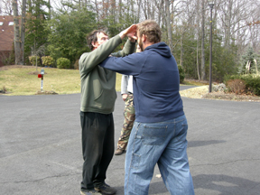
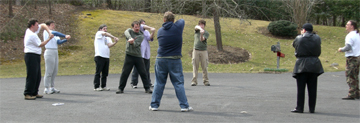
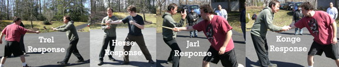

Stav Training Blog
Introduction: At the last Iceand Fire USA Stav training event in October 2006 we fixed the date for the current course. So far four students are present, Therissa (whose hospitality we are currently enjoying), Miki who organised the event and Hank and Chris. Five more students are expected tomorrow and this course will be their first direct experience of Stav training. - Graham
Miki: I picked Graham up at Dulles airport on Wednesday. The snow was really coming down, and heaven only knows what we would do if it didn't clear up. But sally forth, as they say, can't go any way but forward. We had a semi-slippery ride home, largely becuase I wasn't thinking and took the overland route rather than the highway home. The next day I hurriedly packed for Friday and drove Graham down to St. Mary's College. The ride was lovely but long.
Day 1 - Visit to Therissa's Crew at St. Mary's College of Maryland
Therissa: Graham and Miki joined me on campus - St. Mary's College of Maryland, where I teach biology and an introductory Stav class. They arrived around 3:30pm yesterday (Thursday), and at 5pm we hooked up with my three most dedicated students. Graham took them through the basic and advanced staff exercises and the stances. I smiled to see how well my students did what I'd taught them. I winced a couple times, too - I'd taught them a couple mistakes! Graham then went on to teach the five principles/two-person drills, plus demonstrated the hand-to-hand defenses. That was the end of the formal training at the gym, but the night was yet young! We found a quiet room and did the fulgyia exercise. I'm glad my students got to do that, but I was also tickled to see (for the first time) my own fylgja, brown bear. It's a fit! It makes sense! Happy day. The last part of the evening was spent talking over coffee (tea for me) and junk food. I was just so glad that they got to spend that time with Graham, who was just great with them. More than that, Graham was training me as an instructor; I learned a lot. I also felt some real confidence in my own Stav work, pretty much for the first time. Graham, Miki and I stopped for some dinner then came on to my place, arriving here shortly after midnight. It was a great start to several days of Stav training!
Day 2 - Intermediate/Instructor Training
Hank: We worked on a variety of techniques that built on what the Stav Discovery Seminar in October started. It is actually hard to pick out individual things beyond some of the more advanced staff work, because it fit extraordinarily well with our prior instruction. Graham only said "oops" once!
Day 3 - Day 1 of Stav Discovery Weekend
Miki: we started with a large group of beginners intermixed with yesterday's group and Graham introduced the basic staff exercises an demo'd the strikes and thrusts. We took a break and then went on to begin the animal exercises. Prior to lunch we finished the first two aetts. We are now at length.
James: - The first day of stav training was avery good one. Some of the rune stances (about two) I encountered as stances when I was taken Jow ga northern style kung-fu. Much of the hand-to-hand is based on moving around the opponent and using his momentum against him. The actual movement is fluid and feels extremely good to do. Stav has fullfilled the norse expression of the staff being the most dangerous weapon. We did some sword-counters as part of staff practice. The ability to quickly change the length of the staff made it easy to manuever around the incoming blade and strike the attacker outside of their attack range (no swordsman were harmed in the making of this film.) We also discussed about how to eat so that your body gets the most energy out of the way it's designed to take in nutriants. We disussed sleep and other things that need to be put in balance for physical, mental, and energetic health reasons. Stav is an interesting way to make martial arts, spirituality, and health intertwine in a way that is cohesive to understand and fun to learn. (no zombies were harmed because they can't feel pain.)
Day 4 - Day 2 of Stav Discovery Weekend
Chris: During the final day of training the concept of the lines "clicked" and I "felt" the centerline as I was peforming the staff exercises. Graham had mentioned previously that the staff will tell the body what to do and it was a great feeling to experience the concept working. The rune reading later in the day was interesting because as we talked about Joshua's reading concerning his automobile situation, I actually pulled favorable runes concerning my choice of a recent vehicle purchase. Hooray! Though I managed to get a sunburn on my forehead, the weather was nice and it was a great wrapup for our first STAV session of 2007.
